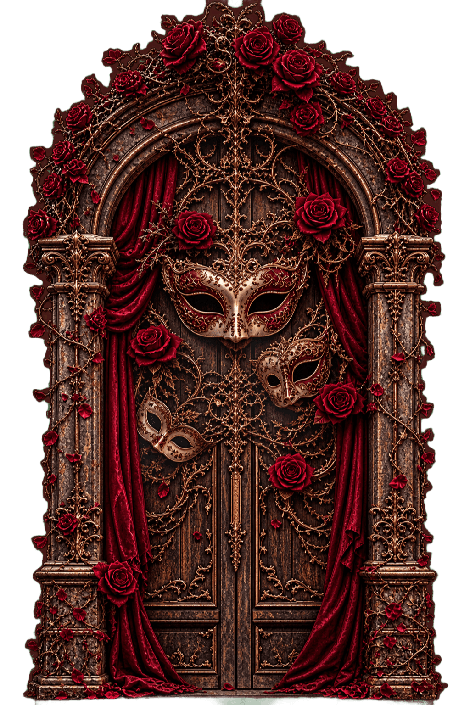

Choisis ton monde
Choisis avec soin. Le destin ne connaît aucun chemin de retour.
-
 Sombreval
Sombreval
La peste remonte la vallée. -
 Salem
Salem
Le village accuse, le tribunal écoute. -

Sérénissime
Venise complote derrière ses masques.